| RECENZE |
|
· 21. 12. 2007 : UNIKÁTNÍCH 15 LET KRVIK TOTR |
|
Krvik Totr oslavili dnes výjimečným veřejným vystoupením 15 let od chvíle, kdy se Novotný s Koutem z obavy z neúspěchu zaštítili před vydáním svého pilotního díla Vsegda gotov! názvem, který již neodpářou. Patnáctý rok patřil k nejúspěšnějším, napsali doposud nejucelenější hru Továrna, funkční kabaretní představení Produkt prošlo mnoha štacemi, završeno úspěšným Jiráskovým Hronovem. Zopakováno bylo dnes, opravdu výjimečně, protože PJN je na celoroční stáži v Bordeaux a do Čech se vrátil opravdu jen na skok. Řekněme, že šlo o vánoční večírek. Pohodička, klídeček. A také určitý sentiment po dlouhém odloučení skupiny, která v této sestavě funguje pět let. Jinak by to totiž musel být propadák: nezkoušelo se, před Petrovým příjezdem se jen šolíchalo, s Petrem v podvečer vystoupení to bylo jen jakési upomínání. Opravdu pohodička - s příšerným následkem a výsledkem: před vyprodaným Nosticákem na Kampě, kam nyní míříme coby na stálou scénu, nakupila se hromada chyb kolektivních i individuálních. Spontánní a strašně trapný nástup k 15 letům, kdy se vůbec nestřetla myšlenka otců a realizace Pavlina. Dále strašný klavír, strašný zpěv, pletené texty... Nejstrašnější bylo cokoli, co předvedlo strašné zakladatelské trio. Příkladem budiž předčasné nástupy, kterých bylo jak u ochotníků; perličkou byl Petrův motavý odchod v Moskevníčkovi, po němž neudržel rovnováhu (po noci prochlastané s Koutem) a na jeviště znovu vpadl, krz oponu, jejíž část strhl... Na druhou stranu platí to, co se tu píše velice často: Novotný s Koutem bojovali, aby se chytli. V tom směru byla teatrologicky vděčná Rozcvička, kde bylo úplně hmatatelně cítit, jak se ladí a z katastrofy velice těžce bruslí směrem k čemukoli divácky vděčnému, což se nakonec povedlo. A pak chytali padající míček po zbytek představení, ovšem jedině oni dva dokázali vnímat druhého, a sice sebe samé dva. Je vidět, jak jsou funkční a opravdu propojení. Krásným vrcholem byli Tři mušketýři, před rokem málem již zapomenutá věc, která se znovu vedrala v plné síle na jeviště. Dnes jsme je zahráli po hronovsku, s krásným žudrovským přízvukem, a byl sukces enormní. Nevyšla Šťastná kancelář, již po bůhvíkolikáté, něco se z ní ztratilo. Zato vyšel spontánní přídavek, nenazkoušená skladba V čekárně, která už také dávno padla, aby byla dnes vytažena a předvedena v nejčistší podobě. Celkově to byl humus se světlými místečky, přímo zářícími. Co je jasné: tudy ne, přátelé. Takto ne, přátelé. Tohle byla totiž ostuda, kterou zachránila jen vůně stromečku. Je jasné, že je třeba dělat věci jinak. Rok 2008 bude pro Krvik Totr významně přelomový. Musíme opravdu jinudy. A co je také jisté: po čtvrt roce bez sebe jsme konečně trochu zestárli - a tohle, co jsme dnes hráli, prostě už hrát nemůžeme. |
| ZPRÁVA |
|
· 18. 10. 2007 : ANTONÍN DS + DIVADÍLNA |
|
Po pěti letech v kontextu českého amatérského divadla došlo na (pro naši historii) unikátní událost: bývalí Puchmajeři, naši to v mnohém vzoři či otcové, v současné době Antonín DS, respektive jejich principál Martin J. Švejda, přizval(i) v tuto chvíli nefunkční soubor Krvik Totr ke spolupráci na intelektuálním muzikálu Ivan, Dušan a Kamil (kdysi to hru KDS Puchmajer). Pod režisérskou taktovkou švejdovou zapějí v lednu 2008 v bizarní kombinaci Tomáš Kout s chotí (míněna Petra ex-Biňovcová), Pavla Drtinová a Bogdan Cieślar, který tradičně obstará choreografii, a jeho žena Sonia obstará hudbu a malou, byť fatální roličku. Filip Votava z projektu ze studijních důvodů odstoupil. |
| RECENZE |
|
· 18. 10. 2007 : KRVIK TOTR REVIVAL 2 |
Krvik Totr Revival - tak si Krvici říkali někdy v roce 2000-1, když - ještě ve dvojici Novotný/Kout - omračovali publikum svými povídkami. Pro jedno odpoledne se "revival" vrátil dnes, tentokrát opravdu jako (polo)revival, protože "soubor bývalé Divadílny a Tomáš Kout z budoucích Krvik Totr" hráli na charitativním festivalu "Rozmarýna pomáhá začít, začněte pomáhat Rozmarýně" na náměstí Míru. Byla to opět rodinná akce. Dohodil nám ji Ríša Tůma (ze svého Staroměstského baru a předtím z Pidi, kde nám pomohl s Návratem z proutí), celou akci moderoval Tomáš, no a další účinkující také nebyli daleci - kytarista Katky Šarközi málem hrál (na kytaru) v Továrně, snad jen stepařská show Wings a koncert Fast Food nemají s námi nic společného. Pořadatelé byli poněkud svojští a opozdili festival o tři hodiny (kvůli čemu nehráli Krvici třikrát, ale pouze jednou). Krvik Totr na to zareagovali tím, že Cieślarovi vzali místo CD se sound supportem nějakého Mozarta. Zachránili však vše taxíkem a hrálo se řekněme standardně. S programem a obsazením bylo mnoho šíbování. Tomáš v roli Wericha po roce 1948 angažoval na Voskovcovo místo Horníčka Bogdana (poté, co z akce na poslední chvíli vypadl - či vycouval Filip). Sonia střídavě zkoušela party Filipa a Pavly, kteří nakonec svoje odehráli. Sonia tedy zařídila zvuk a nápovědu (dle vlastních slov zbytečně), klavír byl playbackový, neb na náměstí Míru nepřenositelný. Tomáš zvolil nejschůdnější cestu: hratelné a především hudební kousky z Produktu: titulní Produkt (v jevištní úpravě hronovské, avšak kvůli mikrofonům - které nám vnutil zvukař - poněkud nudné náměstímírovské), Rozcvičku (jež zaujala paní s nákupem, která se hlasitě smála a kontrolovala reakce ostatních), Ovce (s velkým sólem pro Pavlu, která se rozjela a přeřvala celý Mírák), Reloaded (který nemohl Bogdan zkazit - horší než Novotný být nemůže...) a Gospel (ve kterém Pavla definitivně strhuje pozornost i hlasivky a ze sboru za ní se stává pantomimické trio napodobující ryby). Bogdan má díky tomuto představení ve svém širokém rejstříku roli ovce i bači, matrixe i jeho pokořitele, několikerou roli v Gospelu, v Rozvičce povýšil ze spartakiádního cvičence na demisólistu... Slovy principála Krvik Totr Revival Tomáše Kouta to celé čekal o mnoho horší i o mnoho lepší, vyčítá si, že do toho šel, a je rád, že do toho šel. Inu, revival, který měl pěkný punc povedeného představení (každou chvíli na hraně průseru, ale se ctí zvládnutého), výjimečného v době přerušení, raritka pro případné fanakrviky.
Leč na závěr: V roce 2003 se odehrálo jediné představení Krvik Totr bez Tomáše Kouta - a nebylo to ono. V roce 2007 se odehrálo jediné představení Krvik Totr bez Petra Novotného - a taky to nebylo ono. V tomhle tedy už máme jasno. |
| ZPRÁVA |
|
· září 2007 : EMIGRACE KRVIK TOTR |
|
Došlo k unikátní situaci v dějinách Krvik Totr: ani jeden z původní trojice není na území České republiky... Petr odjel na stáž do Bordeaux. Tomáš s Petrou jsou na svatební cestě v Nice. Filip jede na dovolenou do Řecka. Typický Fíla - on nemůže jet do Francie, když už tam jsou ti dva... |
|
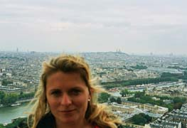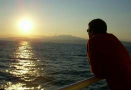 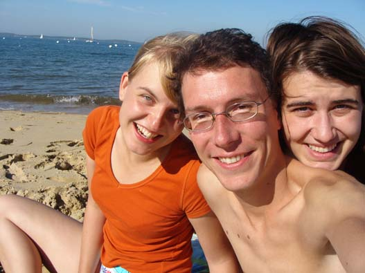 |
| ZPRÁVA |
|
· 9. 9. 2007 : ONA & ON PODRUHÉ A ZASE JINAK |
Těsně před svůj odjezd na stáž vložil Petr Jediný Novotný druhé uvedení představení Ona & On, tedy text-appealový Eintopf povídek a písniček o lásce a jídle se Zuzkou Macákovou a Filipem Votavou. Hudba SPODP Filtr, povídky a scénky PJN a Zuzka (autorsky se podíleli někdy oba, jindy zvlášť), světla Helena Jirásková. To zní prostě. Nešlo však o druhé uvedení čili první reprízu, nýbrž o druhou premiéru. Přišlo nám, že premiéra v Nablízku, ač stokrát vtipnější než původní, neuvedená verze, se přes léto nějak rozsmutněla a zvážněla. A každopádně se všichni shodli na tom, že začátek je divný. Slovy Jenšíka Daniela "Mentální masturbace". Navíc Zuzka i Petr přes léto sami zveselili a nalezli si nové téma: "Nový svět". V Novém světě už to není tak, že "Víme, co chceme, ale nevíme jak a s kým". V Novém světě VÍME jak a víme s kým. Na to téma vznikla u obou nová povídka (kupodivu Nový svět) a písnička Bombiván (která nahradila Tragéda). Jinak zůstalo vše při starém, nové kousky celé představení uvedly a opravdu posunuly jinam. Navíc - ač se nezměnil sled textů ani jejich obsah, v tomto novém vyznění ta samá slova působila zcela jinak. Ale jak vlastně vyzněla... Petr si se Zuzkou teoreticky naplánovali nový směr, pozitivní a vtipný. Ve finále se ovšem opakoval pracovní postup plně podobný tomu červnovému: měli jen 6 dnů na vše, ve kterých vše napsali, poskládali, upravili - a poté začali zkoušet hudbu, přestavby a světla (hrálo se tentokrát v Řetízku na DAMU). Práci s texty tedy zahájili až před diváky. A nutno říci, že se to výjimečně zdařilo. I to oba více bavilo - nevěděli, do čeho jdou. Účinek byl báječný. Diváci (kterých bylo tak padesát a naprosto Řetízek nacpali) byli obrovsky podpůrní a sežrali vše i s navijákem. Konečně jsme tu měli (nečekaně) Přemysla Ruta, který potvrdil obrovskou změnu k lepšímu, že jsou v textech jako doma, svobodní. A jinak tu byl výkvět všech skupin Petrových i Zuzčiných, které ale tak nějak příjemně patří k sobě (KATaP, Krvici, Tomovi gympláci, Šipky [že, Koumáku], rodiny...). Hrálo se úžasně, mělo to drive, byla to velká bžunda. A stejně byli tací, kteří pod tím vším rozkódovali hluboký smutek. Sice se smějeme, ale to jen, abychom nebyli patetičtí, abychom nešli do pekel. Uvnitř to ale opravdu není veselé.
Toto představení bylo zároveň Petrovou rozlučkou s českými prkny a s přáteli. Vydařilo se megaicky. Šli jsme v úžasně promísené partě asi třiceti lidí do Popocafépetlu, kde hráli skvělí cikáni - už po Počepicích totiž bylo dohodnuto, že se nebude chlastat, ale tančit. A tak jsme tančili. Do tří do rána tady, do pěti jsme ještě popili v Bataliónu. Pivo za 45 korun nás ale udolalo k spánku. Večer, noc, spánek i ráno byly příjemné a veselé - Petr byl v obložení drahých panen počepických, Evy a Lenky :) Že by se jednomu chtělo na rok pryč, to tedy ne. |
| ZPRÁVA |
|
· 31. 8.–1. 9. 2007 : KOUT & PETRA (premiéra) |
Už je to uděláno, už je to hotovo! Poslední srpnový den jsme poskočili o mnoho světelných let dopředu: Tomáš Kout a Petra Biňovcová se vzali, a kdo by si teď už jen vzpomněl na Koutika v krátkých trenýrkách, ten je out, protože teď začalo "seriózno" a život. Popravdě, Koutovic svatba byla spíše všeobecná veselice, bez větších výstřelků, zato od začátku do konce plná energizujících emocí a přátel všeho druhu. Ukázalo se, jak moc jsou spjaté rodiny Koutů i Novotných (ženichové a svědci) , když jsme tak v autokoloně mířili do Klenče, spolu s Votikem a Cieślarovými (VIP hosté). V Klenči se přidala Binďa a ve Veltrusech zástupy Krviků aka VOŠHáků, gympláků, LAiků (zdá se, že se tu příjemně zacelila nejedna stará rána) či IC ľudí. Ve Veltrusech na zámku došlo na nejeden výbuch smíchu: "Budete žít pod společným jménem Kout, Koutová" - to se opravdu nedalo. Či standardní "Ano", které Tomáš spontánně zdramatičtěl ve stylu Miloše Kopeckého: "Ano, rád," na což brilantně zareagovala zkušená Petra svým "Ano, ráda". Že se vzali rádi, všichni víme, celou svatební oslavu jim to však všichni házeli na hlavu a patrně ještě dlouho budou. Bylo zvláštní sedět na svatebním obědě s těmi samými tvářemi, které se stále potkávají, tentokrát však v pozici ženicha, nevěsty, rodiny, svědka a nejbližších přátel. Zvláštní - trochu divné - a krásné. O dojetí tu nebyla nouze. V sokolovně v Račiněvsi se pak udála úžasná párty pro sto lidí, na které se převážně tančilo, a to nevídaným způsobem. Aj ta nevěsta byla unesena, ale hned zase nalezena, stálo to jen jedno pivo, halt Kout je zkušeňák. V pozdním a podroušeném stavu jsme se vzepřeli tchánově organizaci svatby mladých a vypůjčili si od fantatické keyboardové zábavovky Elmex kytárku a zahráli Tomášovi a Petře čtyři písničky SPODP Filtru. Poprvé se na nás tančilo a poprvé jsme hráli přes elektriku. Akce potom pokračovala v kempu Obora, kde jsme byli (Petr, Tomáš, Filip) v roce 1990 na školním výletě (a kde měla být i oslava, kdyby bylo méně hnusně). To už bez Koutů, které dorozvezl svatební autobus do hotýlku. Na VIP chatičce č. 25 zbylí gympláci a P+F blbli před barevnou televizí Tesla fandíce panu Jaroslavovi v AZ kvízu a truchlíce s notorickou smolařkou v Áčku Pavlíny Wolfové...
Druhý den jsme už jen v gymplácké skupině s Koutovými pokračovali v kempíku dopíjením GPJP's svatebního daru (šestnáctilitrového hrnečku s motivem zajíce v říji plného koly s rumem), a pak už se parta dělila. Nejdéle vydržela úderná sestava Novotný-Votava-Pihrt-Sušil, kterou svatební veselice odvála až do kralupského opida Votavů k jejich tétéčkovému vláčkovému panelu (navazujíce na berlínský pobyt u podobně šiblého Hartmutha), načež jsme popíjeli v UNESCEM chráněném bufetu na nádraží a pak na nádražce bubenečské. Úplnou tečku nejen za svatebčany, ale i za dnes uplynulými dvaceti léty, co se zná ústřední trio Krvik Totr, udělali Votava s Novotným pár pivy v Dejvické Sokolovně, několik set metrů od místa, kde se před tou nepředstavitelnou dobou poprvé potkali. Toto výročí však zůstává právem skryto za nádhernou svatbou těch nejbližších, které máme.
PS: Na Koutově svatbě byli skoro všichni: Petr, Filip a rodiny povinně, za Krviky Pavla, Sonia a Bogdan a chodící Tobiasz, Anička z Austrálie na chvíli se navrátivší, Martina (s Petrem), Zita (těhotná! a s Filipem), Jarda Huml Pokorný, za VOŠH pak Franta s Klárou a Bárou, Jana Soprová, Kevin. Stěžejní byli gympláci - Maggie, Lenka s Davidem, Anička, Pihrt, Sůša, vzácný Mareček, Iva, Varel, Hodan, König. Za LA Pavla Fridrichová, Lucie Janovská s Pavůlem, Denisa, Willy a Machan a z Intercateringu dorazil Filip Khünl a hlavně Románek a fotící Etienne. A samozřejmě nám zatím neznámí kamarádi Petřini v čele s fajn svědkyní Vlastou. |
|
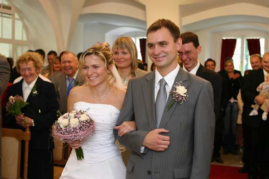 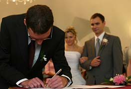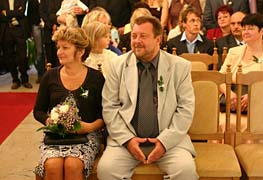 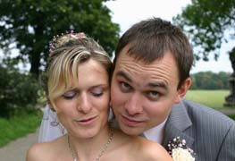 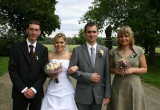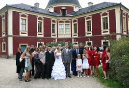 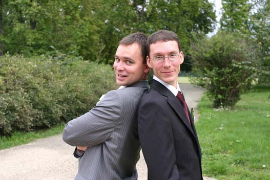 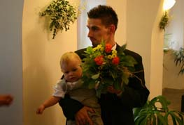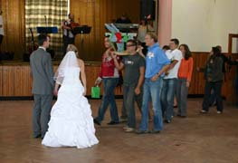 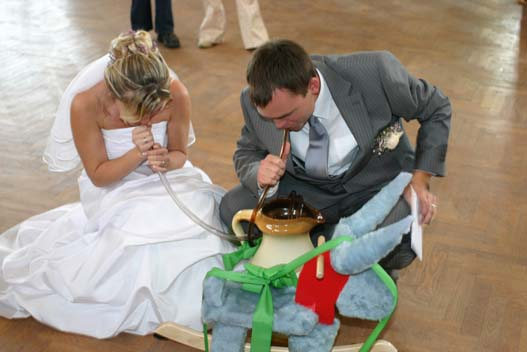 |
| ZPRÁVA |
|
· 12. 8. 2007 : BYLO TO HRONO! |
Bez ohledu na to, co se nám přihodilo v souboru, dobře jsme se zapsali na svém prvním opravdu národním divadelním festivale. Neboť Hronov, respektive "77. ročník Jiráskova Hronova – festivalu amatérského divadla (Celostátní mezidruhové přehlídky amatérského divadla s účastí zahraničních souborů)", letos představil přes tři desítky souborů, které do společného hrnce postoupily z oněch druhových přehlídek (Písek experimentátoři, Náchod studenti, Chrudim loutkáři apod.). Už to bylo příjemné - být mezi třiceti z přibližně 250 (a patrně více) souborů. Leč!
ZDE si můžete přečíst první odborné recenze na nás, z hronovského zpravodaje, kde je řečeno vše, kriticky kriticky i nekriticky nekriticky.
A dále: V polovině festivalu vyšel v Lidových novinách vše dosavadní shrnující článek - a tam jsme se umístili na druhém místě, a to na základě bodů šestnácti odborných zástupců z řad teatrologických (hodnotících 1-5). Náš průlom na 16. stranu celostátních Lidovek však kalí fakt, že zde autor (nám nijak známý Jana Soprová...) neuvedl kýžené jméno Krvik Totr, ale pouze nicneříkající dvojici autorů Tomáš Kout & Petr (ani ne Jediný) Novotný.
Tak jako nenastaly standing ovations na Hronově, ač to na to vypadalo (a dobře nás pak zchladily recenze, které si můžete přečíst TAM), stejně padla naděje na "medaile". Nejenže se o nás nikdo ani omylem nezmínil na nominacích Zlatého Aloise (ale to bychom si opravdu fandili), ale v bodovém hodnocení jsme se po nástupu druhé poloviny souborů ocitli na celkovém čtvrtém místě. A to stačilo vyplazit jazyk - do brambor jsme propadli o 0,021 bodu... Na druhou stranu jsme jediný soubor na celém festivalu, který byl hodnocen body 3 a výše - všechny ostatní aspoň jedním kritikusem vyfasovaly body nižší.
Byli jsme čtvrtí na Písečku, čtvrtí na Písku, tož - čtvrtí na Hronově! |
| ZPRÁVA |
|
· 5. 8. 2007 : KRVIK TOTR PŘERUŠUJÍ ČINNOST |